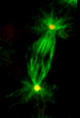

Biological Properties
Taxol and microtubules
A great deal of interest in Taxol was triggered in 1979, when scientists discovered that Taxol has a unique mechanism for preventing the growth of cancers. It was discovered that if a cell attempts to undergo mitosis in the presence of the drug, then it will fail to complete the process and will be left in a semi-divided state. Since cancer cells divide at a much higher rate than normal cells, they are preferentially affected. The result is an arrest in tumour growth, as the cancer cells are unable to complete mitosis.
All cells are supported from within, by a complex ‘scaffolding’ of structural filaments. These filaments help to keep the cell’s shape and more importantly, to keep the various organelles within the cell in the right place. There are three main types of filament: actin, microtubules and intermediate filaments. Taxol is concerned only with the microtubules.
Microtubules
| Microtubules are long, hollow cylinders, with an outer diameter of about 25 nm. They are made up of two proteins, alpha-tubulin and beta-tubulin, which are polymerised end to end in long strands. Thirteen of these strands are then bunched together to form the cylindrical microtubule. The filaments tend to be long (often running half the width of the cell) and rigid, their main purpose being to govern the location of the various cell components. They are particularly important during the process of mitosis - where they form the mitotic spindle at the centre of the cell. This spindle then controls the movement and separation of the cell's chromosomes, in preparation for the cell dividing into two. Anything that affects the formation of microtubules therefor affects mitosis. |  Mitotic Spindle microtubules glow green |
The two tubulin proteins are roughly spherical and there are a large number of them in the cell’s cytoplasm. Microtubules are labile - there is a continual exchange of tubulin subunits with the cytoplasm. The microtubule is also a polar structure - having a plus (fast growing) end and a minus (slow growing) end. By varying the ease with which the tubulin subunits can join or leave the microtubule, the cell can change the filament’s length. This lability is essential for proper cell function.(5)
Colchicine and Taxol
A number of antimitotic drugs act by interfering with the exchange of tubulin subunits between the microtubules and the free tubulin pool in the cytoplasm. One such drug is colchicine, which binds to the free tubulin and prevents it’s polymerisation into microtubules. As a result the microtubules rapidly shorten and can disappear completely. This effect is only temporary, as the cell soon replaces the tubulin subunits but this drug and other like it will preferentially kill any abnormally dividing cells, e.g. cancer cells.
Taxol has a rather different mechanism. Rather than bonding with the free tubulin, it bonds tightly with the microtubule and stabilises it. This causes much of the free tubulin to polymerise into microtubules. This is the reason why Taxol has the affect of arresting the division of cells - since the mitotic spindle can’t fall apart after it’s completed it’s task, mitosis is unable to reach completion and the cell remains blocked by stable microtubule bundles.
Side effects
Unfortunately, Taxol not only affects cancer cells but all cells in the body with a high turnover. This includes those of the digestive tract and the lymphatic system. However the most serious side effect is that of myelosuppression - that is, the depression of bone marrow activity and hence the body’s ability to produce blood cells. As a result the body becomes more susceptible to infection and may show signs of anemia.(6)
Paclitaxel is given intravenously, as it irritates skin and mucus membranes on contact. Slightly less than half of the patients must also take premedication (eg. antihistamines) to counteract serious allergic reactions to the drug (hypersensitivity). Such reactions can result in problems ranging from rashes or a mild drop in blood pressure, to major breathing difficulties, hives and fluid build up round the heart.(11)
Other side effects can include; reversible hair loss, muscle and bone pains, gastrointestinal problems and nerve damage. However the risks involved are outweighed by the drugs benefits to patients with advanced cancer.(7)
 Next
Page: Sources
of Taxol - the yew tree.
Next
Page: Sources
of Taxol - the yew tree.